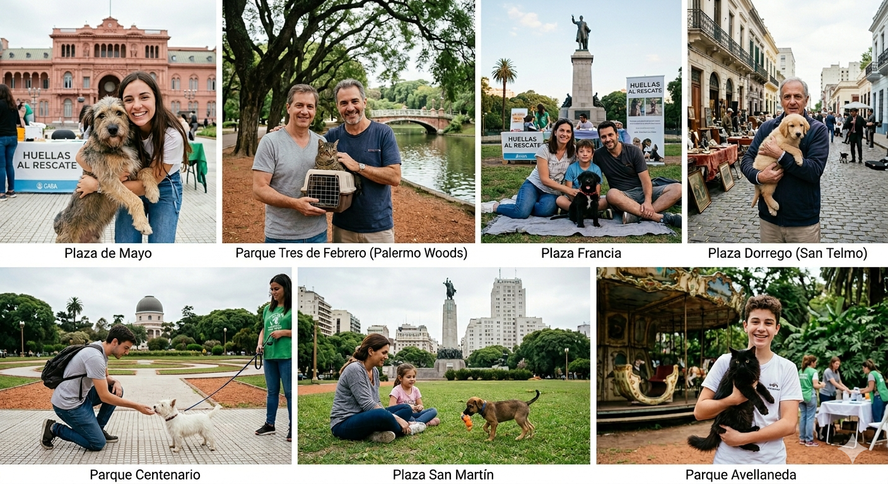

¿Quiénes somos?
En Huellas al Rescate trabajamos, desde hace más de 2 años, en la protección de los animales abandonados y maltratados en Argentina. Nuestro equipo está formado por profesionales y más de 100 voluntarios, que nos ayudan en nuestra labor de rescate de perros y gatos en situación de abandono, brindándoles atención veterinaria y encontrando familias responsables para su adopción.
Al frente de nuestra Fundación, los 365 días del año y sin descanso, está Federico Luna, un luchador incansable que, desde niño, dedica todos sus esfuerzos al rescate y cuidado de los animales abandonados. Apoyar a huellas al rescate es ayudar a Federico y a su equipo a poder seguir ayudando a los animales más desfavorecidos, cada día.
Nuestros Logros
En este lapso de dos años , han rescatado 400 animales, en su mayoría perros, concretando 300 adopciones y en la actualidad, tienen 30 de ellos en tránsito.
La disposición del equipo de rescate es al 100% y a la hora de dar en adopción, se encargan de corroborar, que nuestro amiguitos no vuelva a sufrir maltrato, ni ningún tipo de agravio, por eso, tienen a una persona encargada de entrevistar a todos los futuros dueños, interesados en salvar una vida. Para mas información visita nuestra sección programas.
